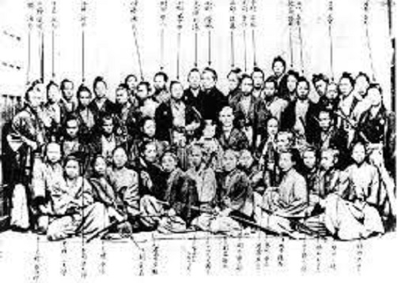

新選組とは

新選組の概要
新選組は1863年に京都で結成された幕府公認の治安維持組織です。 京都の町を守るために活動し、近藤勇や土方歳三、沖田総司などの 隊士が所属していました。
新選組は厳しい規律を守りながら京都の治安維持に尽力しました。 現在でも歴史小説や映画、アニメなど多くの作品で描かれ、 日本の歴史を代表する組織として知られています。 「誠」の旗を掲げ、幕末の動乱の中で最後まで信念を貫いたことから、 現在でも多くの人に親しまれています。

新選組は1863年に京都で結成された幕府公認の治安維持組織です。 京都の町を守るために活動し、近藤勇や土方歳三、沖田総司などの 隊士が所属していました。
新選組は厳しい規律を守りながら京都の治安維持に尽力しました。 現在でも歴史小説や映画、アニメなど多くの作品で描かれ、 日本の歴史を代表する組織として知られています。 「誠」の旗を掲げ、幕末の動乱の中で最後まで信念を貫いたことから、 現在でも多くの人に親しまれています。